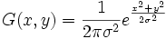

Gaussian filtering is a smoothing or blurring process that convolutes the image with a Gaussian function:

The output is similar to a weighted average of the neighboring pixels, with the weights in the center larger than the weights near the boundaries. To use this function,
For more specific information on this function, see documentation provided for the X-Function imgGaussian in the Origin X-Function reference file. This can be accessed from the Command Window by typing